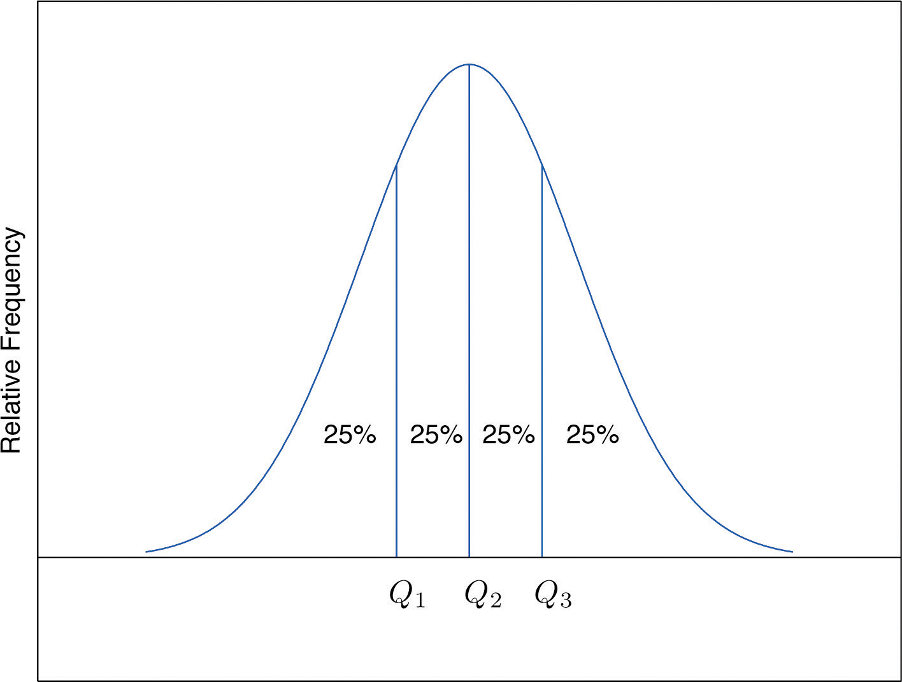
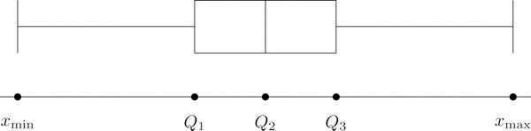
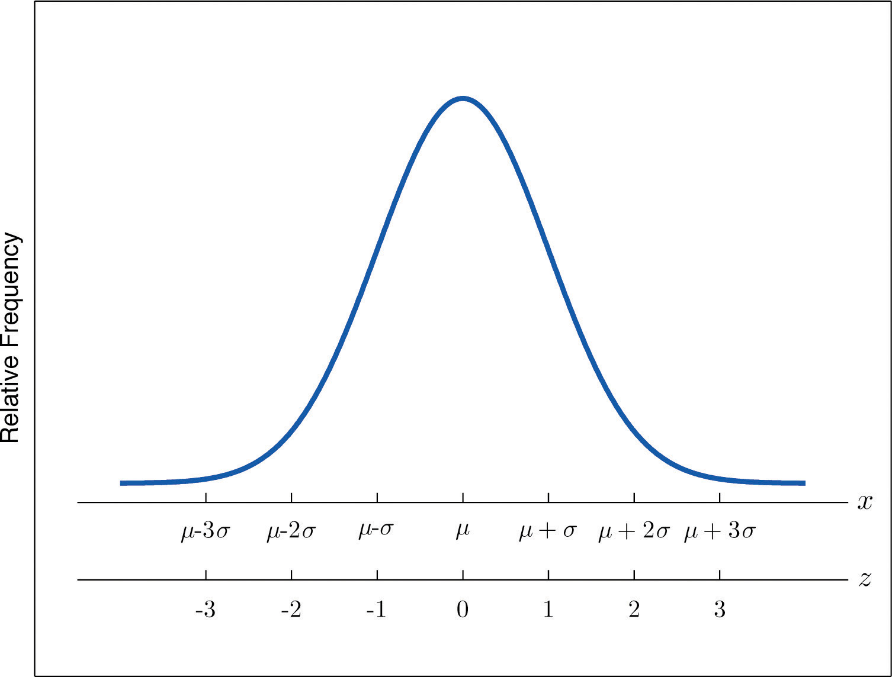

When you take an exam, what is often as important as your actual score on the exam is the way your score compares to other students’ performance. If you made a 70 but the average score (whether the mean, median, or mode) was 85, you did relatively poorly. If you made a 70 but the average score was only 55 then you did relatively well. In general, the significance of one observed value in a data set strongly depends on how that value compares to the other observed values in a data set. Therefore we wish to attach to each observed value a number that measures its relative position.
Anyone who has taken a national standardized test is familiar with the idea of being given both a score on the exam and a “percentile ranking” of that score. You may be told that your score was 625 and that it is the 85th percentile. The first number tells how you actually did on the exam; the second says that 85% of the scores on the exam were less than or equal to your score, 625.
Given an observed value x in a data set, x is the Pth percentileThe measurement x, if it exists, such that P percent of the data are less than or equal to x. of the data if the percentage of the data that are less than or equal to x is P. The number P is the percentile rankOf a measurement x, the percentage of the data that are less than or equal to x. of x.
What percentile is the value 1.39 in the data set of ten GPAs considered in Note 2.12 "Example 3" in Section 2.2 "Measures of Central Location"? What percentile is the value 3.33?
Solution:
The data written in increasing order are
The only data value that is less than or equal to 1.39 is 1.39 itself. Since 1 is 1∕10 = .10 or 10% of 10, the value 1.39 is the 10th percentile. Eight data values are less than or equal to 3.33. Since 8 is 8∕10 = .80 or 80% of 10, the value 3.33 is the 80th percentile.
The Pth percentile cuts the data set in two so that approximately P% of the data lie below it and % of the data lie above it. In particular, the three percentiles that cut the data into fourths, as shown in Figure 2.12 "Data Division by Quartiles", are called the quartilesOf a data set, the three numbers , , that divide the data approximately into fourths.. The following simple computational definition of the three quartiles works well in practice.
Figure 2.12 Data Division by Quartiles
For any data set:
Find the quartiles of the data set of GPAs of Note 2.12 "Example 3" in Section 2.2 "Measures of Central Location".
Solution:
As in the previous example we first list the data in numerical order:
This data set has n = 10 observations. Since 10 is an even number, the median is the mean of the two middle observations: Thus the second quartile is The lower and upper subsets are
Each has an odd number of elements, so the median of each is its middle observation. Thus the first quartile is , the median of L, and the third quartile is , the median of U.
Adjoin the observation 3.88 to the data set of the previous example and find the quartiles of the new set of data.
Solution:
As in the previous example we first list the data in numerical order:
This data set has 11 observations. The second quartile is its median, the middle value 2.71. Thus The lower and upper subsets are now
The lower set L has median the middle value 1.90, so The upper set has median the middle value 3.71, so
In addition to the three quartiles, the two extreme values, the minimum and the maximum are also useful in describing the entire data set. Together these five numbers are called the five-number summaryOf a data set, the list of the data set:
The five-number summary is used to construct a box plotFor a data set, a diagram constructed using the five-number summary, as in Figure 2.13 "The Box Plot", which graphically summarizes the distribution of the data. as in Figure 2.13 "The Box Plot". Each of the five numbers is represented by a vertical line segment, a box is formed using the line segments at and as its two vertical sides, and two horizontal line segments are extended from the vertical segments marking and to the adjacent extreme values. (The two horizontal line segments are referred to as “whiskers,” and the diagram is sometimes called a “box and whisker plot.”) We caution the reader that there are other types of box plots that differ somewhat from the ones we are constructing, although all are based on the three quartiles.
Figure 2.13 The Box Plot
Note that the distance from to is the length of the interval over which the middle half of the data range. Thus it has the following special name.
The interquartile range (IQR)Of a data set, the difference between the first and third quartiles. is the quantity
Construct a box plot and find the IQR for the data in Note 2.44 "Example 14".
Solution:
From our work in Note 2.44 "Example 14" we know that the five-number summary is
The box plot is
The interquartile range is
Another way to locate a particular observation x in a data set is to compute its distance from the mean in units of standard deviation.
The z-scoreOf a measurement x, the distance of x from the mean in units of standard deviation. of an observation x is the number z given by the computational formula
according to whether the data set is a sample or is the entire population.
The formulas in the definition allow us to compute the z-score when x is known. If the z-score is known then x can be recovered using the corresponding inverse formulas
The z-score indicates how many standard deviations an individual observation x is from the center of the data set, its mean. If z is negative then x is below average. If z is 0 then x is equal to the average. If z is positive then x is above average. See Figure 2.14.
Figure 2.14 x-Scale versus z-Score
Find the z-scores for all ten observations in the GPA sample data in Note 2.12 "Example 3" in Section 2.2 "Measures of Central Location".
Solution:
For these data and s = 0.8674. The first observation x = 1.9 in the data set has z-score
which means that x = 1.90 is 0.8589 standard deviations below the sample mean. The second observation x = 3.00 has z-score
which means that x = 3.00 is 0.4093 standard deviations above the sample mean. Repeating the process for the remaining observations gives the full set of z-scores
Suppose the mean and standard deviation of the GPAs of all currently registered students at a college are μ = 2.70 and σ = 0.50. The z-scores of the GPAs of two students, Antonio and Beatrice, are and z = 1.28, respectively. What are their GPAs?
Solution:
Using the second formula right after the definition of z-scores we compute the GPAs as
Consider the data set
Consider the data set
Consider the data set represented by the ordered stem and leaf diagram
Is the 90th percentile of a data set always equal to 90%? Why or why not?
The 29th percentile in a large data set is 5.
The 54th percentile in a large data set is 98.6.
In a large data set the 29th percentile is 5 and the 79th percentile is 10. Approximately what percentage of observations lie between 5 and 10?
In a large data set the 40th percentile is 125 and the 82nd percentile is 158. Approximately what percentage of observations lie between 125 and 158?
Find the five-number summary and the IQR and sketch the box plot for the sample represented by the stem and leaf diagram in Figure 2.2 "Ordered Stem and Leaf Diagram".
Find the five-number summary and the IQR and sketch the box plot for the sample explicitly displayed in Note 2.20 "Example 7" in Section 2.2 "Measures of Central Location".
Find the five-number summary and the IQR and sketch the box plot for the sample represented by the data frequency table
Find the five-number summary and the IQR and sketch the box plot for the sample represented by the data frequency table
Find the z-score of each measurement in the following sample data set.
Find the z-score of each measurement in the following sample data set.
The sample with data frequency table
has mean and standard deviation s ≈ 2.71. Find the z-score for every value in the sample.
The sample with data frequency table
has mean and standard deviation s ≈ 1.67. Find the z-score for every value in the sample.
For the population
compute each of the following.
For the population
compute each of the following.
A measurement x in a sample with mean and standard deviation s = 3 has z-score z = 2. Find x.
A measurement x in a sample with mean and standard deviation s = 3 has z-score Find x.
A measurement x in a population with mean μ = 2.3 and standard deviation σ = 1.3 has z-score z = 2. Find x.
A measurement x in a sample with mean μ = 2.3 and standard deviation σ = 1.3 has z-score Find x.
The weekly sales for the last 20 weeks in a kitchen appliance store for an electric automatic rice cooker are
The table shows the number of vehicles owned in a survey of 52 households.
For two months Cordelia records her daily commute time to work each day to the nearest minute and obtains the following data:
Cordelia is supposed to be at work at 8:00 a.m. but refuses to leave her house before 7:30 a.m.
The mean score on a standardized grammar exam is 49.6; the standard deviation is 1.35. Dromio is told that the z-score of his exam score is −1.19.
A random sample of 49 invoices for repairs at an automotive body shop is taken. The data are arrayed in the stem and leaf diagram shown. (Stems are thousands of dollars, leaves are hundreds, so that for example the largest observation is 3,800.)
For these data, ,
The stem and leaf diagram shows the time in seconds that callers to a telephone-order center were on hold before their call was taken.
Consider the data set represented by the ordered stem and leaf diagram
For the following stem and leaf diagram the units on the stems are thousands and the units on the leaves are hundreds, so that for example the largest observation is 3,800.
Find the five-number summary for the following sample data.
Find the five-number summary for the following sample data.
For the following stem and leaf diagram the units on the stems are thousands and the units on the leaves are hundreds, so that for example the largest observation is 3,800.
Determine whether the following statement is true. “In any data set, if an observation is greater than another observation , then the z-score of is greater than the z-score of ”
Emilia and Ferdinand took the same freshman chemistry course, Emilia in the fall, Ferdinand in the spring. Emilia made an 83 on the common final exam that she took, on which the mean was 76 and the standard deviation 8. Ferdinand made a 79 on the common final exam that he took, which was more difficult, since the mean was 65 and the standard deviation 12. The one who has a higher z-score did relatively better. Was it Emilia or Ferdinand?
Refer to the previous exercise. On the final exam in the same course the following semester, the mean is 68 and the standard deviation is 9. What grade on the exam matches Emilia’s performance? Ferdinand’s?
Rosencrantz and Guildenstern are on a weight-reducing diet. Rosencrantz, who weighs 178 lb, belongs to an age and body-type group for which the mean weight is 145 lb and the standard deviation is 15 lb. Guildenstern, who weighs 204 lb, belongs to an age and body-type group for which the mean weight is 165 lb and the standard deviation is 20 lb. Assuming z-scores are good measures for comparison in this context, who is more overweight for his age and body type?
Large Data Set 1 lists the SAT scores and GPAs of 1,000 students.
http://www.gone.2012books.lardbucket.org/sites/all/files/data1.xls
Large Data Set 10 records the scores of 72 students on a statistics exam.
http://www.gone.2012books.lardbucket.org/sites/all/files/data10.xls
Large Data Sets 3 and 3A list the heights of 174 customers entering a shoe store.
http://www.gone.2012books.lardbucket.org/sites/all/files/data3.xls
http://www.gone.2012books.lardbucket.org/sites/all/files/data3A.xls
Large Data Sets 7, 7A, and 7B list the survival times in days of 140 laboratory mice with thymic leukemia from onset to death.
http://www.gone.2012books.lardbucket.org/sites/all/files/data7.xls
http://www.gone.2012books.lardbucket.org/sites/all/files/data7A.xls
http://www.gone.2012books.lardbucket.org/sites/all/files/data7B.xls
50%.
, , , , ,
, , , , ,
−1.3, 1.39, 0.4, −0.35, −0.11.
for x = 1, for x = 2, z = 1.48 for x = 7.
16.
4.9.
, , , ,
Emilia: , Ferdinand:
Rosencrantz: z = 2.2, Guildenstern: z = 1.95. Rosencrantz is more overweight for his age and body type.